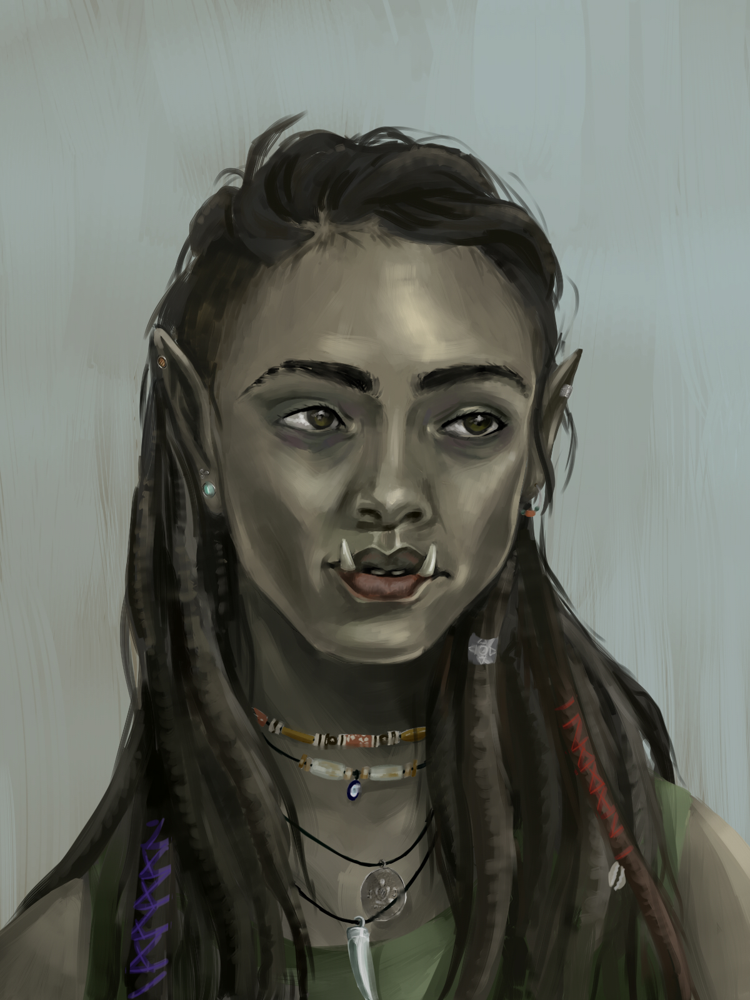

Note
Robyn

Base Info
Type Player Character Player Lise Character Information
Name Robyn Gender Female Creature Type Humanoid Race Half-Orc Class Monk, Way of the Astral Self Born Torpe , 24 years ago Languages Common, Orcish Family - Rhayn (mother)
- Linzo (father)Connections - Party (member)
- Mozillin Brown’s Bazaar (member)Status Alive Sessions From Session 9 onwards Stats
Level =this.levelHP 45 AC 14 Str 13 Int 11 Dex 16 Wis 13 Con 14 Cha 14
Robyn is a Half-Orc Monk of the Way of the Astral Self. She is played by Lise.
Description
Appearance
Robin is a muscular, relatively slender half-orc woman. Due to her heritage, her lower canines protrude from her mouth, and her skin is greenish grey in tone. She has black braids and dreadlocks for hair, with colored accents wrapped around some of the dreads. Thanks to becoming infused with Baghtru’s Gloves, her fingers and hands have stonestring woven through them; hair-thin flexible wires that solidify when used with aggressive force.
Thanks to her years in the circus, she wears colorful but practical clothing, mainly consisting out of loose striped pants, foot-wraps, and a short sleeveless top. Her neck and wrists are adorned with a smattering of custom-made jewelry, mostly consisting out of rope, leather, wood, shells, pearls, stones, and even teeth. Though not worn anymore, she used to have Tijani’s Medalion worn around her neck as well, before she snapped the cord.
Personality
Robyn is quiet, but has a history of being very adventurous due to her upbringing and lifestyle. Most of all, she enjoys a good challenge, whether physical or mental.
Biography
Before the campaign
Robyn was born in a coastal village on the continent of Uurogh, far to the north of Califen, where various orc tribes are constantly in conflict with each other. The village is called Torpe. It consists of around ten to fifteen round stone huts in the sand, adorned with yellow and green flags and cloths. Robyn can still remember her birthplace, the area at least, as she has more or less forgotten the people except for her close friends and family. In Torpe, there are only houses and small businesses. The village operates under the rule of the capital war settlement, Kasegrimm, so no additional orc-related institutions are necessary. A portion of the harvest and crafts in the village is withheld as taxation to sustain the ongoing wars. Robyn’s parents work hard. Her mother is an herbalist, and her father lost his leg during a major war against the people of… and since then, he has become a simple goat herder with a wooden leg. Their names are Rhayn (F) and Linzo (M), both half-orcs. As a child, Robyn played a lot with her friends Ruzo (F) and Thex (M). They often engaged in role-playing games or put on theatrical performances. Robyn also loved dancing; she choreographed small shows for all the parents in the village. She was imaginative and creative. Life in Torpe progressed slowly and simply.
However, everything changed when the leadership of Kasegrimm introduced conscription for all orcs and half-orcs under the city’s rule between the ages of 10 and 35. At that time, Kasegrimm was at war with Burduur and urgently needed manpower, both at the front lines and at the base. Robyn was taken away from her home at the age of eleven for forced labor at the base. This involved tasks like cleaning and cooking. Half-orcs are a hybrid race, combining the brute strength of orcs with the intelligence of humans. Only strong fighters survive in Uurogh, which is why half-orcs were considered inferior. This racism also played a role in the working and living conditions of the slaves. Robyn worked long days, ate cold leftovers, and slept in a hammock with barely any shelter over her head. Fortunately, Robyn was not alone. She had her best friends by her side. She shared her sleeping quarters with thirteen peers. They had no personal possessions such as toys; their entertainment consisted of singing, dancing, and sharing stories. This kept an element of childhood and a love for life alive.
After four long years of service to Kasegrimm, Robyn, Ruzo, and Thex finally managed to escape with the help of Tohangh (M), a half-orc two years older who had become friends with them. Tohangh had been in service for a longer time as punishment for his thefts. They fled through the mountains. Survival in the wilderness was unfamiliar to them. The area west of the Uurogh mountain range, which defined the continent’s border, was entirely unknown. Nevertheless, they survived for three weeks and arrived in Simplefeld, tired and starving. This village was inhabited by humans. Robyn and her group spoke little Common, but these people understood exactly what was happening without needing words. Robyn was kindly received and taken care of here. They were given a warm meal and a place to stay at Mrs. Thierze’s inn.
On the third day of her stay in Simplefeld, a group of entertainers happened to arrive in the village, called Mozillin Brown’s Bazaar. Mozellin Brown (F) was an eccentric dwarf with a deep bass singing voice, which was also her act. She was the founder and current owner of the circus. The circus consisted of 15 members at that time, excluding Mozillin:
- Xavier (M), an older man with a talking puppet
- The twins Padma and Serena, both belly dancers (F)
- Violet Highmore (F), an elven fortune teller
- Macaw (M), the musician, with his singer Evie (F), a handsome young elf duo
- Norros (M), a Goliath strongman
- Tijani (M), the floating and water-walking elephant
- Hjoldir (M), a performer with dangerous weapons, like knife throwing
- Four acrobats/dancers
- Bluebell and Blits (M), a clown duo
Robyn felt drawn to this group, auditioned with her dancing, and got a job with the circus. Ruzo also had enough talent, and Thex was allowed to join as a guard provided he learned to fight well. Tohangh bid farewell to the three, as he would find work elsewhere. The circus set off towards the Bloeming Isles, stopping in every village along the way to perform. Robyn and Ruzo performed as a duo, known as “Rob en Ruzo.” The stage felt like home to Robyn. She was given a horse and a tent and quickly integrated into the group. Robyn got along well with almost everyone, except for Macaw and Evie. Macaw was a renowned minstrel, adored by the audience. Robyn found him arrogant and full of himself. He treated her as if she was nobody. Evie was a clueless follower of Macaw. Robyn didn’t care much about others’ opinions of her.
Life as a gypsy was dangerous; the circus was frequently attacked. Robyn had to learn to defend herself. As a half-orc, Robyn was naturally robust and relatively strong, providing a good foundation for combat. With her tusks, even as a 15-year-old girl, she appeared intimidating to enemies. She learned to fight with her hands and feet and developed a martial fighting style as an extension of her dancing.
Robyn also received training from the mysterious Loxodon named Tijani. He turned out to be a master monk from the Yaeghara Monastery in the east. He was skilled in the way of the Astral Self and deeply connected to his Ki. Why he left the monastery remains unknown to Robyn; Tijani didn’t talk much. Master Tijani was looking for an apprentice and sought the traveling circus for protection in return. He had unique talents that entertained people. Tijani taught Robyn the power of meditation, an area she had less aptitude for compared to fighting. Robyn wasn’t particularly calm. She preferred partying and drinking over meditation, but she was still amazed by Master Tijani’s abilities and decided to give the “zen” lifestyle a chance. Tijani explained to Robyn that meditation was the path to her inner power or Ki, and the goal was to find and channel this energy. At the age of seventeen, Robyn finally managed to use her Ki in battles and could now rightfully call herself a monk. By then, Robyn had come to view Master Tijani as a kind of father figure. She wanted to make him proud and took his example to heart, although she was also just a rebellious teenager who wanted to do her own thing.
Thex dies, the cause of which I’m yet to determine, possibly an illness.
Robyn has a connection with the fortune teller, who is a few years older. Robyn finds her eccentric but intriguing. She is enchantingly beautiful and very mysterious, hence the connection.
After a performance in Cape Rosa, Master Tijani suddenly gets hit with a dart in his neck and falls from his horse. Robyn is right behind him and witnesses the event. She sees a black figure duck behind a tree and gallops towards it. When her horse can’t proceed through dense underbrush, she dismounts and continues on foot. However, there is no trace of the figure. Robyn gives up and heads back to the group, where she sees Tijani lying on the ground with Madame Mozillin and Macaw attending to him. From a distance, she notices that Tijani has noticed her return. He looks at her and simultaneously presses something into Macaw’s hand. Robyn can’t hear what he says. Before she can reach him, Tijani passes away. His body, his belongings, and the dart all vanish into nothingness, like an illusion.
Robyn knows that a simple dart couldn’t have meant the end for this monk, even if it were poisoned. Robyn knows that monks are immune to diseases and poisons. She’s too bewildered to process the death of her master. So many questions race through her mind: Who was the black figure? What kind of enchanted dart felled Tijani? What did Tijani say in his final moments, and what did he give to Macaw? She dares not ask the latter, but she can’t sleep due to curiosity.
One night, a week after Tijani’s death, while the group is getting drunk in an inn in Cape Rosa, Robyn sneaks into Macaw’s room and rummages through his belongings. In his bag, she finds the amulet that Tijani always wore around his neck. Without hesitation, she pockets it. “Macaw should never have had this,” she thinks. “Tijani meant it for me.” The next morning, Macaw realizes that the amulet is missing and suspects Robyn due to her sneaky behavior over the past week. When he goes to confront her, he sees that her belongings are gone. Through the window, he sees Robyn running away from the inn. He chases after her. Robyn escapes him by leaping onto a ship that is about to dock. Macaw isn’t nearly as agile as Robyn and gives up. Robyn looks down at him and shouts a few choice words. As she turns around, the ship’s crew glares at her angrily. How is she going to explain this…
Adventures
Story of after meeting the gang.
Relationships
Persoon
Is dit nodig?
Character information
Quests
Robyn main focus is finding out what happened to Tijani, and who killed him. The amulet also hides away secrets that Robyn doesn’t fully understand yet.
Notable items
- List of items
Magic items
LIST
FROM "Dungeons & Dragons 5e/Campaigns/Current/StracciaD&D 2/Magic Items"
WHERE owner = this.name_firstTrivia
- List of trivia